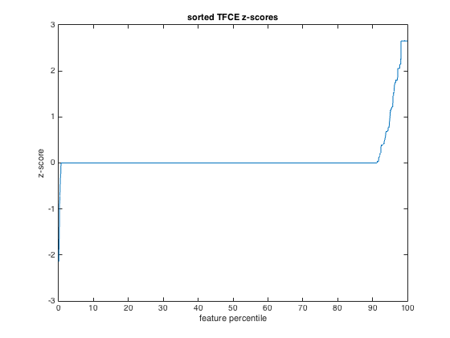
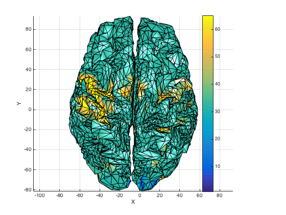

Demo: Threshold-Free Cluster Enhancement (TFCE) on surface dataset
The data used here is available from http://cosmomvpa.org/datadb.zip
This example uses the following dataset: + 'digit' A participant made finger pressed with the index and middle finger of the right hand during 4 runs in an fMRI study. Each run was divided in 4 blocks with presses of each finger and analyzed with the GLM, resulting in 2*4*4=32 t-values
This example illustrates the use of Threshold-Free Cluster Enhancement with a permutation test to correct for multiple comparisons.
TFCE reference: Stephen M. Smith, Thomas E. Nichols, Threshold-free cluster enhancement: Addressing problems of smoothing, threshold dependence and localisation in cluster inference, NeuroImage, Volume 44, Issue 1, 1 January 2009, Pages 83-98.
- For CoSMoMVPA's copyright information and license terms, #
- see the COPYING file distributed with CoSMoMVPA. #
Contents
Check externals
cosmo_check_external({'surfing','afni'});
Set data paths
The function cosmo_config() returns a struct containing paths to tutorial data. (Alternatively the paths can be set manually without using cosmo_config.)
config=cosmo_config(); digit_study_path=fullfile(config.tutorial_data_path,'digit'); readme_fn=fullfile(digit_study_path,'README'); cosmo_type(readme_fn); output_path=config.output_data_path; % resolution parameter for input surfaces % 64 is for high-quality results; use 16 for fast execution ld=16; % reset citation list cosmo_check_external('-tic'); % load single surface intermediate_fn=fullfile(digit_study_path,... sprintf('ico%d_mh.intermediate_al.asc', ld)); [vertices,faces]=surfing_read(intermediate_fn);
Overview
--------
fMRI responses to a human participant pressing buttons with the index and middle finger.
Contents
--------
- glm_T_stats_allruns+orig.{BRIK,HEAD}:
t-statistics associated with finger presses.
There are 4 runs, each with 4 blocks.
Each block has two t-statistics, one for each of button presses for the
index and middle finger (in that order).
- epi+orig.{HEAD,BRIK}:
A single EPI image.
- icoXX_mh.YY.asc:
Surface anatomy meshes of two hemispheres with standard topology, generated
using AFNI SUMA's MapIcosahedron. Left and right hemisphere surfaces were
merged in the order left, right; the first half of the nodes and faces refer
to the left hemisphere, the second half to the right hemisphere.
XX={16,64} is the number of linear divisions of MapIcosahedron; surfaces
have (XX^2)*10+2 nodes and XX^2*20 faces in each hemisphere.
YY={pial_al,white_al} are the outer and inner surfaces around the grey matter
generated by FreeSurfer. YY=intermediate_al is the node-wise average of the
pial and white surfaces; this surface can be used for single-surface
analyses when surfaces are generated using Caret or BrainVoyager
YY=inflated_alCoMmedial are inflated surfaces with the center of mass
along the medial side of the two hemispheres. These surfaces are suitable
for visualization purposes.
Methods
-------
This dataset contains data from a fingerpress experiment where a participant
(28y right-handed male) pressed buttons on a box with the index and middle
finger of the right hand while fMRI volumes were acquired. Over four runs, in
total sixteen blocks of 72s finger presses were acquired; in each block the
participant pressed the index and middle finger during different `mini-blocks'
of 8 s each. Each block was preceded and followed by a 16s rest period.
Functional data was preprocessed in AFNI with despiking, time slice correction,
motion correction, and scaling to percent signal change by dividing the signal
for each volume by the mean of the run. No spatial smoothing or interpolation
was applied to the functional data, except for interpolation during motion
correction. The preprocessed data was analyzed with a general linear model
(GLM) with separate regressors for each finger and each block (and some
regressors of no interest) to obtain t-values for each finger in each block.
License
-------
The contents are made available by Nikolaas N. Oosterhof <nikolaas.oosterhof
|at| unitn.it> under the Creative Commons CC0 1.0 Universal Public Domain
Dedication ("CC0"). See the LICENSE file for details, or visit
http://creativecommons.org/publicdomain/zero/1.0/deed.en.
Contact
-------
Nikolaas N. Oosterhof <nikolaas.oosterhof |at| unitn.it>
Load functional data
data_path=digit_study_path; data_fn=fullfile(data_path,'glm_T_stats_perblock+orig'); targets=repmat(1:2,1,16)'; % class labels: 1 2 1 2 1 2 1 2 1 2 ... 1 2 chunks=floor(((1:32)-1)/4)+1; % half-run: 1 1 1 1 2 2 2 2 3 3 ... 8 8 vol_ds = cosmo_fmri_dataset(data_fn,'targets',targets,'chunks',chunks);
Map univariate response data to surface
% this measure averages the data near each node to get a surface dataset radius=0; surf_band_range=[-2 2]; % get voxel data within 2mm from surface surf_def={vertices,faces,[-2 2]}; nbrhood=cosmo_surficial_neighborhood(vol_ds,surf_def,'radius',radius); measure=@(x,opt) cosmo_structjoin('samples',mean(x.samples,2),'sa',x.sa); surf_ds=cosmo_searchlight(vol_ds,nbrhood,measure); fprintf('Univariate surface data:\n'); cosmo_disp(surf_ds);
Warning: found 415 / 5124 center nodes outside the volume, these will be
ignored.
Using 210084 / 210084 voxels in functional volume mask
+00:00:01 [####################] -00:00:00 r=0.00, 3.2 vox
+00:00:03 [####################] -00:00:00
Univariate surface data:
.a
.fdim
.labels
{ 'node_indices' }
.values
{ [ 1 2 3 ... 5.12e+03 5.12e+03 5.12e+03 ]@1x5124 }
.fa
.node_indices
[ 1 2 3 ... 5.12e+03 5.12e+03 5.12e+03 ]@1x5124
.center_ids
[ 1 2 3 ... 5.12e+03 5.12e+03 5.12e+03 ]@1x5124
.samples
[ NaN 0.11 0.722 ... 5.24 -0.0639 -0.632
NaN -0.253 -1.03 ... 7.41 0.846 -1.7
NaN 0.421 -0.71 ... -0.813 -0.349 0.72
: : : : : :
NaN 0.738 -0.143 ... 0.827 -1.21 -2.01
NaN -0.00235 -0.294 ... 0.19 -0.393 0.203
NaN 0.17 -0.765 ... 2.27 -0.393 -0.0536 ]@32x5124
.sa
.chunks
[ 1
1
1
:
8
8
8 ]@32x1
.labels
{ 'fi_i_R1_B01#0_Tstat'
'fi_m_R1_B01#0_Tstat'
'fi_i_R1_B02#0_Tstat'
:
'fi_m_R4_B03#0_Tstat'
'fi_i_R4_B04#0_Tstat'
'fi_m_R4_B04#0_Tstat' }@32x1
.stats
{ 'Ttest(168)'
'Ttest(168)'
'Ttest(168)'
:
'Ttest(168)'
'Ttest(168)'
'Ttest(168)' }@32x1
.targets
[ 1
2
1
:
2
1
2 ]@32x1
Average data in each chunk
for this example only consider the samples in the first condition (targets==1), and average the samples in each chunk
for group analysis: set chunks to (1:nsubj)', assuming each sample is data from a single participant
surf_ds=cosmo_slice(surf_ds,surf_ds.sa.targets==1); surf_ds=cosmo_average_samples(surf_ds); fn_surf_ds=fullfile(output_path, 'digit_target1.niml.dset'); % save to disc cosmo_map2surface(surf_ds, fn_surf_ds); fprintf('Input data saved to %s\n', fn_surf_ds);
Input data saved to /Users/nick/organized/tmp/cosmo_output/digit_target1.niml.dset
Run Threshold-Free Cluster Enhancement (TFCE)
% All data is prepared; surf_ds has 8 samples and 5124 nodes. We want to % see if there are clusters that show a significant difference from zero in % their response. Thus, .sa.targets is set to all ones (the same % condition), whereas .sa.chunks is set to (1:8)', indicating that all % samples are assumed to be independent. % % (While this is a within-subject analysis, exactly the same logic can be % applied to a group-level analysis) % define neighborhood for each feature % (cosmo_cluster_neighborhood can be used also for meeg or volumetric % fmri datasets) cluster_nbrhood=cosmo_cluster_neighborhood(surf_ds,... 'vertices',vertices,'faces',faces); fprintf('Cluster neighborhood:\n'); cosmo_disp(cluster_nbrhood); opt=struct(); % number of null iterations. for publication-quality, use >=1000; % 10000 is even better opt.niter=250; % in this case we run a one-sample test against a mean of 0, and it is % necessary to specify the mean under the null hypothesis % (when testing classification accuracies, h0_mean should be set to chance % level, assuming a balanced crossvalidation scheme was used) opt.h0_mean=0; % this example uses the data itself (with resampling) to obtain cluster % statistcs under the null hypothesis. This is (in this case) somewhat % conservative due to how the resampling is performed. % Alternatively, and for better estimates (at the cost of computational % cost), one can generate a set of (say, 50) datasets using permuted data % e.g. using cosmo_randomize_targets), put them in a cell and provide % them as the null argument. opt.null=[]; fprintf('Running multiple-comparison correction with these options:\n'); cosmo_disp(opt); % Run TFCE-based cluster correction for multiple comparisons. % The output has z-scores for each node indicating the probablity to find % the same, or higher, TFCE value under the null hypothesis tfce_ds=cosmo_montecarlo_cluster_stat(surf_ds,cluster_nbrhood,opt);
Cluster neighborhood:
.neighbors
{ [ 1 13 43 163 298 433 ]
[ 2 688 703 823 958 1.09e+03 ]
[ 3 972 987 1.11e+03 1.35e+03 1.48e+03 ]
:
[ 4.55e+03 4.55e+03 5.12e+03 ... 5.12e+03 5.12e+03 5.12e+03 ]@1x7
[ 4.9e+03 4.9e+03 5.12e+03 ... 5.12e+03 5.12e+03 5.12e+03 ]@1x7
[ 4.55e+03 4.55e+03 4.9e+03 ... 5.12e+03 5.12e+03 5.12e+03 ]@1x7 }@5124x1
.fa
.radius
[ 5.74 9.59 5.81 ... 10.6 10.6 9.3 ]@1x5124
.node_indices
[ 1 2 3 ... 5.12e+03 5.12e+03 5.12e+03 ]@1x5124
.sizes
[ 7.29 29.4 9.05 ... 27.4 33.1 31.3 ]@1x5124
.a
.fdim
.values
{ [ 1 2 3 ... 5.12e+03 5.12e+03 5.12e+03 ]@1x5124 }
.labels
{ 'node_indices' }
.origin
.a
.fdim
.labels
{ 'node_indices' }
.values
{ [ 1 2 3 ... 5.12e+03 5.12e+03 5.12e+03 ]@1x5124 }
.fa
.node_indices
[ 1 2 3 ... 5.12e+03 5.12e+03 5.12e+03 ]@1x5124
.center_ids
[ 1 2 3 ... 5.12e+03 5.12e+03 5.12e+03 ]@1x5124
Running multiple-comparison correction with these options:
.niter
[ 250 ]
.h0_mean
[ 0 ]
.null
[ ]
+00:01:38 [####################] -00:00:00 p = 0.016 / 0.004 [+/-0.032] (left/right)
Show results
fprintf('TFCE z-score dataset\n'); cosmo_disp(tfce_ds); nfeatures=size(tfce_ds.samples,2); percentiles=(1:nfeatures)/nfeatures*100; plot(percentiles,sort(tfce_ds.samples)) title('sorted TFCE z-scores'); xlabel('feature percentile'); ylabel('z-score'); nvertices=size(vertices,1); disp_opt=struct(); disp_opt.DataRange=[-2 2]; DispIVSurf(vertices,faces,1:nvertices,tfce_ds.samples',0,disp_opt); % store results fn_tfce_ds=fullfile(output_path, 'digit_target1_tfce.niml.dset'); cosmo_map2surface(tfce_ds, fn_tfce_ds); surf_fn=fullfile(output_path, 'digit_intermediate.asc'); surfing_write(surf_fn,vertices,faces); % show citation information cosmo_check_external('-cite');
TFCE z-score dataset
.samples
[ 0 0 0.772 ... 0 0 0 ]@1x5124
.sa
.stats
{ 'Zscore()' }
.a
.fdim
.labels
{ 'node_indices' }
.values
{ [ 1 2 3 ... 5.12e+03 5.12e+03 5.12e+03 ]@1x5124 }
.fa
.node_indices
[ 1 2 3 ... 5.12e+03 5.12e+03 5.12e+03 ]@1x5124
.center_ids
[ 1 2 3 ... 5.12e+03 5.12e+03 5.12e+03 ]@1x5124
DispIVSurf verbose: z-buffer mode.
DispIVSurf verbose: Scaling ITvect to fit colormap
DispIVSurf verbose: Set hold to off
DispIVSurf verbose: Drawing Patches
DispIVSurf verbose: Applied interp for Shade.
DispIVSurf verbose: Set Edgecolor to black
DispIVSurf verbose: Set view to 2D
DispIVSurf verbose: Displaying colormap
DispIVSurf verbose: Seting Axes properties
DispIVSurf verbose: Done
If you use CoSMoMVPA and/or some other toolboxes for a publication, please cite:
Z. Saad, G. Chen. AFNI Matlab library. available online from https://github.com/afni/AFNI
N. N. Oosterhof, T. Wiestler, J. Diedrichsen (2011). A comparison of volume-based and surface-based multi-voxel pattern analysis. Neuroimage 56 (2), 593-600. Surfing toolbox available online from http://github.com/nno/surfing
Gabriel Peyre. Toolbox Fast Marching - A toolbox Fast Marching and level sets computations [https://www.ceremade.dauphine.fr/~peyre/matlab/fast-marching/content.html]. toolbox fast marching [included in surfing] available online from http://github.com/nno/surfing
N. N. Oosterhof, A. C. Connolly, J. V. Haxby (2016). CoSMoMVPA: multi-modal multivariate pattern analysis of neuroimaging data in Matlab / GNU Octave. Frontiers in Neuroinformatics, doi:10.3389/fninf.2016.00027.. CoSMoMVPA toolbox available online from http://cosmomvpa.org
The Mathworks, Natick, MA, United States. Matlab 8.5.0.197613 (R2015a) (February 12, 2015). available online from http://www.mathworks.com
 